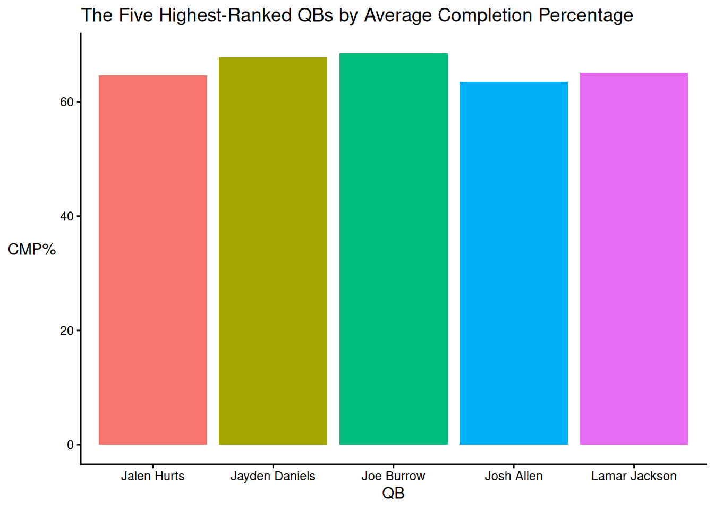
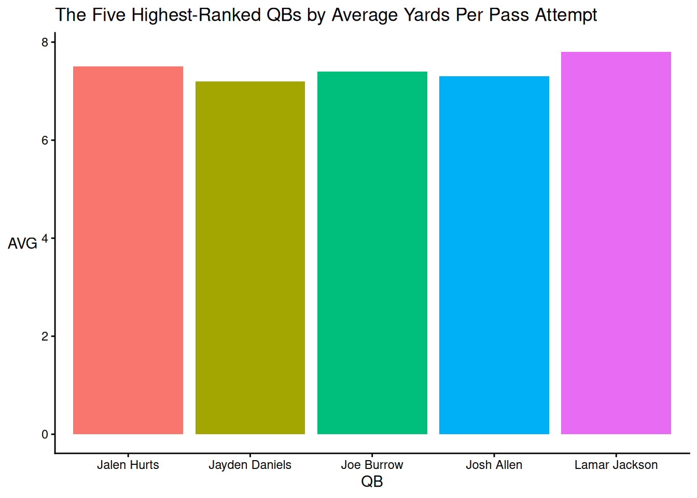

Comparing Five Major Quarterbacks Using Basic Data Analysis and Visualization
data analysis
fantasy football
Author
Finley Jacobson
Published
September 18, 2025
This is an example blog post. Note: The post image was obtained from here.
Code
library("ggplot2")library("tidyverse")
── Attaching core tidyverse packages ──────────────────────── tidyverse 2.0.0 ──
✔ dplyr 1.1.4 ✔ readr 2.1.5
✔ forcats 1.0.1 ✔ stringr 1.5.2
✔ lubridate 1.9.4 ✔ tibble 3.3.0
✔ purrr 1.1.0 ✔ tidyr 1.3.1
── Conflicts ────────────────────────────────────────── tidyverse_conflicts() ──
✖ dplyr::filter() masks stats::filter()
✖ dplyr::lag() masks stats::lag()
ℹ Use the conflicted package (<http://conflicted.r-lib.org/>) to force all conflicts to become errors
1 AI Disclosure
AI Disclosure: AI was not used.
Link to AI Transcript: not applicable
2 Citation
All of the tested statistical data was utilized from ESPN: https://www.espn.com/fantasy/football/story/_/page/FFPreseasonRank25QBPPR/nfl-fantasy-football-draft-rankings-2025-qb-quarterback
3 Abstract
Background: With QBs scoring the most individual points, obtaining a good QB can significantly benefit a person in the long run. On ESPN, QBs (i.e., along with all other positions) are ranked based on the players’ performance. If we were to analyze JUST the career averages from the top listed QBs, would we produce the same or different rankings?
Method: In the present study, I assessed ESPN’s top five NFL QBs and compared them in terms of center, spread, and shape based on average career completion percentage, yards per pass attempt, and passer rating.
Results: My first hypothesis was proven to be wrong, while my second hypothesis was partially correct.
Discussion: Due to my small sample size and minimal data usage, my results lack statistical significance. Most importantly, a player’s stats are based on the player’s past performance and don’t guarantee that this will happen in the future.
4 Background
In the NFL, there are a total of 1,696 players across 32 football teams (i.e., 53 players on each team). On each football team, there is a primary/starting QB along with 1-2 backup QBs in case the primary/starting QB gets injured. Overall, QBs score the most individual points, so choosing a good QB is a big necessity. On ESPN, QBs (i.e., along with all other positions) are ranked based on the players’ performance. According to ESPN, Lamar Jackson is the top QB out of all QBs. Based on career averages, would we produce the same or different rankings?
5 Research Question
By accessing only the career averages (i.e., completion percentage, yards per pass attempt, and passer rating) from the top five ranked QBs according to ESPN, will I be able to produce the same results (i.e., rankings) as ESPN?
6 Hypothesis
For my first hypothesis, I hypothesize that I will generate the same findings (i.e., rankings) as ESPN with only the career average statistics. My second hypothesize is that Lamar Jackson will be ranked the highest after analyzing the top five highest-ranked QBs and comparing them in terms of the center, spread, and shape of a distribution based on career averages, such as CMP% (i.e., completion percentage), AVG (i.e., yards per pass attempt), and RTG (i.e., passer rating).
6.1 Justification
This hypothesis is justified, as the information can be found on ESPN.
7 Method
In the present study, I take the top five highest-ranked QBs according to ESPN (i.e., Lamar Jackson, Josh Allen, Jayden Daniels, Jalen Hurts, and Joe Burrow) and compare them in terms of the center, spread, and shape of a distribution based on career averages, such as CMP% (i.e., completion percentage), AVG (i.e., yards per pass attempt), and RTG (i.e., passer rating).
The Top Five Highest-Ranked QBs According To ESPN
Player_Name
CMP_Percentage
AVG
RTG
Lamar Jackson
65.1
7.8
103.1
Josh Allen
63.5
7.3
93.9
Jayden Daniels
67.8
7.2
98.9
Jalen Hurts
64.6
7.5
93.7
Joe Burrow
68.5
7.4
101.0
Code
ggplot2::ggplot(data = df,mapping =aes(x = Player_Name,y = CMP_Percentage,fill = Player_Name )) +geom_bar(stat ="identity") +labs(x ="QB",y ="CMP%",title ="The Five Highest-Ranked QBs by Average Completion Percentage" ) +theme_classic() +theme(legend.position ="none",axis.title.y =element_text(angle =0, vjust =0.5) # horizontal y-axis title )

Code
ggplot2::ggplot(data = df,mapping =aes(x = Player_Name,y = AVG,fill = Player_Name )) +geom_bar(stat ="identity") +labs(x ="QB",y ="AVG",title ="The Five Highest-Ranked QBs by Average Yards Per Pass Attempt" ) +theme_classic() +theme(legend.position ="none",axis.title.y =element_text(angle =0, vjust =0.5) # horizontal y-axis title )

Code
ggplot2::ggplot(data = df,mapping =aes(x = Player_Name,y = RTG,fill = Player_Name )) +geom_bar(stat ="identity") +labs(x ="QB",y ="RTG",title ="The Five Highest-Ranked QBs by Average Passer Rating" ) +theme_classic() +theme(legend.position ="none",axis.title.y =element_text(angle =0, vjust =0.5) # horizontal y-axis title )
According to the data, my first hypothesis—that I would find the same results as ESPN —was proven to be false. For instance, Joe Burrow, who was ranked fifth, ended up being in the top 3 for all surveyed statistics (i.e., completion percentage, yards per pass attempt, and passer rating). Another noticeable distinction is that Josh Allen, who was ranked number two by ESPN, performed poorly in all surveyed statistics.
My second hypothesis was partially correct, as Lamar Jackson did rank the highest in AVG and RTG, but was ranked third in CMP%.
As for statistical significance, my results are not statistically significant due to the small amount of data used. One of the reasons I obtained different results (i.e., rankings) could be that I did not use the other statistics. Since I utilized only three of the given statistics, these results don’t produce any practical significance. If this study were to be replicated with all of the given statistics, I would find the results to be (somewhat) practical in terms of significance.
9 Strengths and Limitations
Strengths: A strength is that I utilized more than one statistic/variable to strengthen my study.
Limitations: Using only three of the many statistics provided, I severely decreased my statistical significance. By limiting myself to surveying only five QBs, my findings lack depth and strength.
10 Conclusion
In conclusion, my first hypothesis was not supported by the data, while the data partially supported my second hypothesis. However, it’s important to note that due to the small sample size and limited data, my results are not statistically significant. The results would be statistically significant if I utilized all factors. Regardless, even if all measures/variables were utilized, it’s essential to note that these findings are based on the player’s past performance and don’t guarantee that the player will perform according to the results.
{kind=link}